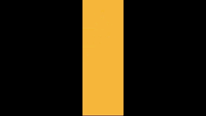
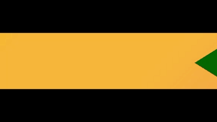

What obstacles do you have to avoid during the game?
There are not many obstacles in the game right now, but they can really give you a good challenge! These traps are:
Spikes!

Pretty straightforward to be honest, you hit them and you die...
Saws!

There are different types of saws!
Static Saws
The saw which stays where it is, even if it might seem like it is gonna break off any second...
Rotating Saws
These saws rotate around a specific block! Make sure to jump over them carefully or you might get killed!
Moving Saws
These saws move, either horizontally or vertically, and will move back and forth continuously! Be careful... they can be fast and even if you dodge them for the time being, they can come back and still hit you!
Rushing Saws
Nearly identical to moving saws, but they go back to their starting point just as they reach their end...
Lasers!

They appear very rarely, but they don't allow you to just mindlessly take shortcuts! No cheating!
Cacti Spikes!


When you get close enough to them, cacti spikes rush towards the direction they are facing, whether that is horizontal or vertical. Watch out, because the further they go, the faster they get... and you don't want to get pricked by one of these!